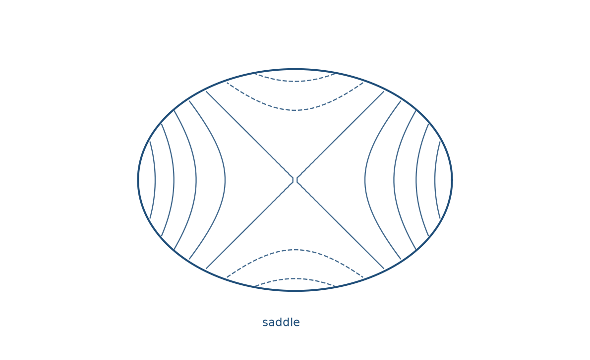
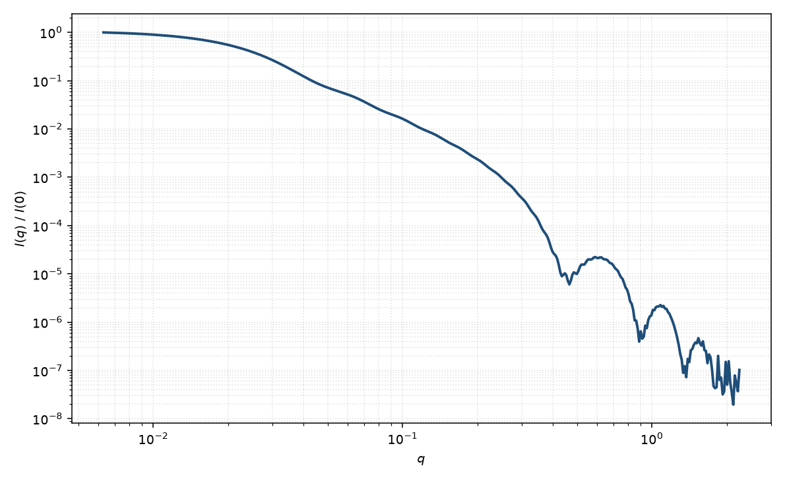

马鞍形圆盘
pringle
适用场景
马鞍形（普林格尔）盘是半径 $R$、厚度 $H$ 的薄盘被弯成双曲抛物面（高斯曲率为负）。适用于翘曲的纳米盘、马鞍形蛋白质组装、以及平盘模型在中等 $q$ 过冲、需要额外曲率阻尼的片状颗粒。
相对平盘，中间 $q^{-2}$ 区仍在，但厚度振荡与盘半径极小被曲率抹圆。曲率很小时应退回平盘或核壳双层盘，不要额外放鞍参数。
物理图像
中面近似为 $z\propto x^2-y^2$（或等价的鞍面参数）。散射振幅是弯曲薄片上的相位积分，粉末平均后等效于平盘形式因子乘以随 $q$ 增加的阻尼。特征长度是鞍的均方起伏 $\sigma_{\mathrm{saddle}}$，而不是又一个半径。
与堆叠圆盘的差别：这里是单片弯曲，不出现层间距 Bragg 峰。
示意图


核心公式
平盘振幅 $F_{\mathrm{disk}}(q,\alpha)$ 乘鞍面相位因子后取向平均。示意上常用
$$P(q)\simeq P_{\mathrm{disk}}(q;R,H)\,\mathrm{e}^{-q^2\sigma_{\mathrm{saddle}}^2/(1+c\,q^2 R^2)},$$其中 $P_{\mathrm{disk}}$ 即短圆柱（Fournet）粉末平均。精确鞍面振幅需对盘面做数值傅里叶变换；上式只用于标明曲率如何压振荡。
参数表
| 参数 | 符号 | 含义 | 单位 | 典型范围 |
|---|---|---|---|---|
| 盘半径 | $R$ | 盘面半径 | Å | 50–800 Å |
| 厚度 | $H$ | 盘的法向厚度 | Å | 10–80 Å |
| 鞍起伏 | $\sigma_{\mathrm{saddle}}$ | 中面均方根偏离 | Å | 小于 $R$ |
| 取向角 | $\theta,\phi$ | 盘法向（二维） | 度 | 粉末或场取向 |
| 衬度 | $\Delta\rho$ | 相对溶剂 SLD 差 | Å$^{-2}$ | 均匀盘 |
拟合注意
$\sigma_{\mathrm{saddle}}$ 与半径多分散、厚度多分散都钝化振荡。没有实空间（电镜）翘曲证据时，优先平盘加一种多分散。曲率不是结构因子：低 $q$ 不应出现堆叠峰。
取向：粉末平均会进一步掩盖鞍的方位。二维若有四次对称调制，才支持鞍面取向，而不是简单的单轴盘取向。
磁性：薄盘磁矩常垂直盘面；弯曲使局部法向散开，磁形式因子比核通道更钝，须单独磁 SLD 与可能更小的磁 $\sigma$。
相近模型
参考文献
- Guinier, A.; Fournet, G. Small-Angle Scattering of X-rays. Wiley: New York, 1955.
- Pedersen, J. S. Analysis of small-angle scattering data from colloids and polymer solutions: modeling and least-squares fitting. J. Appl. Cryst. 1997, 30, 339–354. DOI: 10.1107/S0021889897002532